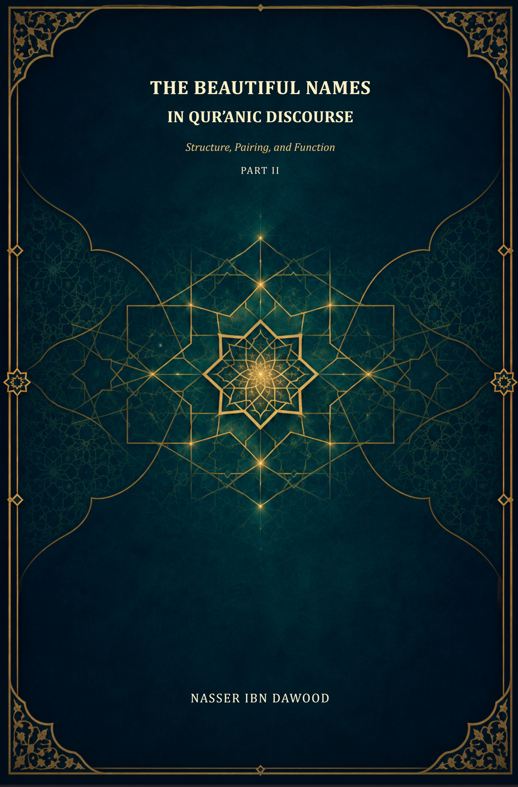

134. The Beautiful Names in Qur’anic Discourse — Part II

An ongoing study of structure, pairing, and function, distinguishing textual evidence, explanation, inference, hypotheses, and operational models.
Condensed conceptual adaptation; the Arabic work remains the primary source. Search text extracted from Word; consult the original for tables, images, and formatting. PDF is not yet available. Work in progress; comprehensive enumeration and reference verification are not claimed complete.
قراءة PDF داخل الموقع / Read the PDF on this website
جارٍ تجهيز القارئ… / Preparing the reader…
Book Summary, Table of Contents & Excerpt
The Beautiful Names in Qur’anic Discourse
Structure, Pairing, and Function
A Condensed Conceptual Adaptation of Part II
Nasser ibn Dawood
Meaning-oriented English edition
I. The Global Knowledge Manifesto
Knowledge is a universal right. The author firmly believes that wisdom should not be locked behind paywalls or language barriers.
Global Access Policy: All books in this library are available for free in multiple digital formats (PDF, HTML, DOCX, TXT).
The Digital Library: As of early 2026, the collection hosts 236 volumes (118 in Arabic and 118 in English), fully optimized for AI-assisted research and digital archiving.
Official Platforms: Main Website: nasserhabitat.github.io/nasser-books/
GitHub: nasserhabitat/nasser-books
This manifesto is reproduced here as supplied by the author for this condensed edition.
II. Translator’s Note: The Bridge of Meaning
This English edition is a condensed conceptual adaptation. It is not a word-for-word translation, but rather an “extraction of essence.” It presents the core philosophical framework in accessible English, omitting the exhaustive linguistic debates and classical references found in the original Arabic text.
For the academic researcher: The original Arabic version remains the primary source for comprehensive linguistic analysis, detailed exegesis (Tafsir), and the complete bibliography.
This adaptation also preserves the methodological status of the Arabic edition. A claim marked OPEN remains open; a CANDIDATE remains a candidate; a RESISTED or STRONGLY RESISTED claim is not revived through simplification; and a CLOSED result remains closed only within its declared scope. The aim is clarity without scientific inflation.
Key Qur’anic terms are sometimes retained in transliteration—such as nafs, tawaffī, barzakh, and baʿth—when a single English equivalent would prematurely narrow the field under study.
Purpose and Scope
This volume asks how Qur’anic names and descriptions of God function within their textual settings, especially in paired or clustered forms and at verse endings. Its practical concern is the reader’s movement from noticing a name to asking what the surrounding passage is doing, what the name contributes to that passage, and how the passage may guide worship, ethical conduct, and reflection.
The book does not treat every proposed name, category, or pattern as a revealed classification. It distinguishes the Qur’anic wording from linguistic description, contextual inference, broader hypothesis, and practical model. “Functional name” is an analytical term used in this study to describe a name as it operates in a particular passage; it is not presented as a Qur’anic technical label.
The English text is selective. It preserves the book’s governing questions, procedures, principal hypotheses, examples, and cautions, while leaving detailed inventories and extended linguistic discussion to the Arabic edition. It is a reading guide, not a replacement for the full study.
How to Read the Method
The study follows a disciplined sequence. First, it fixes the Qur’anic wording and its location. Second, it describes the grammatical and lexical form. Third, it reads the expression within its nearby passage and wider thematic network. Fourth, it states an inference with its limits. Where a larger pattern is proposed, it is treated as a hypothesis and tested against counterexamples. Finally, any practical application is kept distinct from the textual finding.
The book refers to this governance as QCROS. Its purpose is not to make interpretation mechanical. It is to keep claims proportionate to evidence, make uncertainty visible, and preserve the reader’s ability to examine the reasoning.
Chapter 1 From a List of Names to a Network of Qur’anic Resources
A list can help readers locate familiar names, but a list by itself cannot show how a name works in a particular verse. The study therefore moves from inventory to resource network: each occurrence is examined as an actual Qur’anic resource, in its wording, syntax, co-text, and location.
A key editorial distinction is made among explicit divine names, descriptive expressions, possessive or relational constructions, and verbs that describe divine action. These forms may all contribute to discourse about God, but they should not be collapsed into one undifferentiated catalogue. The study’s criteria are intended to prevent an interpretive description from being mistaken for a directly attested name.
The phrase “functional name” points to a contextual role. For example, an ending that joins knowledge and wisdom can direct attention to the relation between divine knowledge and judgment in that passage. The role is inferred from the wording and context; it is not a claim that the name changes, or that a reader can assign it an independent power.
Thus the verse ending is approached as a possible “guiding imprint” for reflection. It can focus a question: why does this passage close here with these names? The answer must be argued from the passage, not supplied by a universal formula.
Chapter 2 Building and Governing the Corpus
Reliable comparison begins with a traceable corpus. The study calls for recording the exact expression, verse reference, grammatical form, nearby subject, and type of relation between words. Direct juxtaposition, coordination, a phrase within the same verse, and a broader thematic association are different evidence classes and must remain distinct.
A corpus is not complete merely because it contains many examples. Claims of exhaustiveness require a documented search procedure, a defined set of inclusion rules, and a way for another reader to reproduce the search. Where that work has not been completed, the study labels its tables as samples or working inventories instead of presenting them as comprehensive counts.